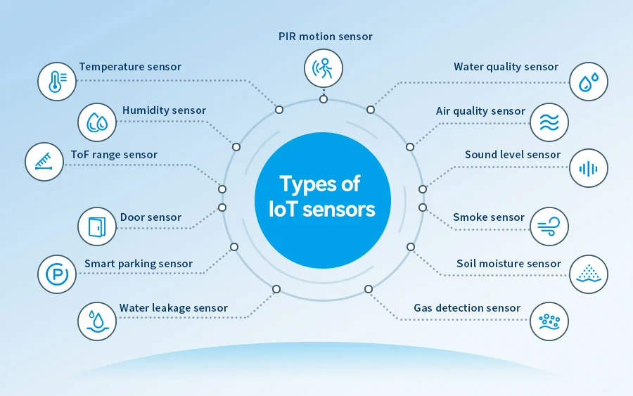

Disciplinas
DESENVOLVIMENTO PARA DISPOSITIVOS MÓVEIS. Concluído
Materiais
[UFMS Digital] Desenvolvimento Dispositivos Móveis - Módulo 4 - Unidade 1 - Vídeo 1
Prof° ministrante: Dr. Rafael dos Passos Canteri.
Sensores do Dispositivo.

- Existem basicamente quatro classes fundamentais:
- SensorManager
- Usada para criar uma instância do serviço do sensor.
- Oferece vários métodos para acessar e listar sensores, registrar e cancelar o registro de listeners de eventos do sensor e coletar informações de orientação.
- Sensor
- Cria uma instância de um sensor específico.
- Oferece vários métodos que permitem determinar os recursos de um sensor.
- SensorEvent
- Encapsula as informações de um evento ocasionado por um sensor (dados brutos do sensor, tipo de sensor do evento, precisão dos dados e data/hora do evento).
- SensorEventListener
- Recebe notificações do SensorManager quando há novos dados em um sensor.
- TYPE_ACCELEROMETER
- Tipo: Hardware
- Descrição: Mede a força de aceleração em m/s² nos três eixos físicos (x, y, z)
- Usos comuns: Detecção de movimento
- TYPE_AMBIENT_TEMPERATURE
- Tipo: Hardware
- Descrição: Mede a temperatura ambiente em graus Celsius (°C)
- Usos comuns: Monitoramento da temperatura do ar
- TYPE_GRAVITY
- Tipo: Software ou Hardware
- Descrição: Mede a força da gravidade em m/s² nos três eixos
- Usos comuns: Detecção de movimento
- TYPE_GYROSCOPE
- Tipo: Hardware
- Descrição: Mede a taxa de rotação em rad/s em torno dos três eixos
- Usos comuns: Detecção de rotação (giro, volta, etc.)
- TYPE_LIGHT
- Tipo: Hardware
- Descrição: Mede o nível de luz ambiente (iluminação) em lux
- Usos comuns: Controle do brilho da tela
- TYPE_LINEAR_ACCELERATION
- Tipo: Software ou Hardware
- Descrição: Mede a força de aceleração em m/s² nos três eixos, sem gravidade
- Usos comuns: Monitoramento da aceleração em um único eixo
- TYPE_MAGNETIC_FIELD
- Tipo: Hardware
- Descrição: Mede o campo geomagnético do ambiente para os três eixos
- Usos comuns: Criação de uma bússola
- TYPE_ORIENTATION
- Tipo: Software
- Descrição: Mede os graus de rotação em torno dos três eixos
- Usos comuns: Determinação da posição do dispositivo
- TYPE_PRESSURE
- Tipo: Hardware
- Descrição: Mede a pressão do ar ambiente em hPa ou mbar
- Usos comuns: Monitoramento das mudanças na pressão do ar
- TYPE_PROXIMITY
- Tipo: Hardware
- Descrição: Mede a proximidade de um objeto em cm com relação à tela de um dispositivo
- Usos comuns: Posição do aparelho durante uma chamada
- TYPE_RELATIVE_HUMIDITY
- Tipo: Hardware
- Descrição: Mede a umidade relativa do ar em porcentagem (%)
- Usos comuns: Monitoramento de umidade ambiente
- TYPE_ROTATION_VECTOR
- Tipo: Software ou Hardware
- Descrição: Mede a orientação de um dispositivo
- Usos comuns: Detecção de movimento e de rotação
Testando sensor de temperatura e umidade
package com.example.testandosensores;
import android.hardware.Sensor;
import android.hardware.SensorEvent;
import android.hardware.SensorEventListener;
import android.hardware.SensorManager;
import android.os.Bundle;
import android.util.Log;
import android.widget.Toast;
import androidx.activity.EdgeToEdge;
import androidx.appcompat.app.AppCompatActivity;
import androidx.core.graphics.Insets;
import androidx.core.view.ViewCompat;
import androidx.core.view.WindowInsetsCompat;
public class MainActivity extends AppCompatActivity implements SensorEventListener {
private SensorManager sensorManager;
private Sensor sensorTemperatura, sensorUmidade;
@Override
protected void onCreate(Bundle savedInstanceState) {
super.onCreate(savedInstanceState);
EdgeToEdge.enable(this);
setContentView(R.layout.activity_main);
ViewCompat.setOnApplyWindowInsetsListener(findViewById(R.id.main), (v, insets) -> {
Insets systemBars = insets.getInsets(WindowInsetsCompat.Type.systemBars());
v.setPadding(systemBars.left, systemBars.top, systemBars.right, systemBars.bottom);
return insets;
});
sensorManager = (SensorManager) getSystemService(SENSOR_SERVICE);
sensorTemperatura = sensorManager.getDefaultSensor(Sensor.TYPE_AMBIENT_TEMPERATURE);
sensorUmidade = sensorManager.getDefaultSensor(Sensor.TYPE_RELATIVE_HUMIDITY);
if (sensorTemperatura != null) {
sensorManager.registerListener(this, sensorTemperatura, sensorManager.SENSOR_DELAY_NORMAL);
} else {
Toast.makeText(this, "Sensor de temperatura indisponível", Toast.LENGTH_LONG).show();
}
if (sensorUmidade != null) {
sensorManager.registerListener(this, sensorUmidade, sensorManager.SENSOR_DELAY_NORMAL);
} else {
Toast.makeText(this, "Sensor de umidade indisponível", Toast.LENGTH_LONG).show();
}
}
@Override
public void onSensorChanged(SensorEvent event) {
Log.i("Sensor", "Valor de temperatura " + event.values[0] + "Cº");
Log.i("Sensor", "Valor da umidade " + event.values[0] + "%");
}
@Override
public void onAccuracyChanged(Sensor sensor, int i) {
}
}